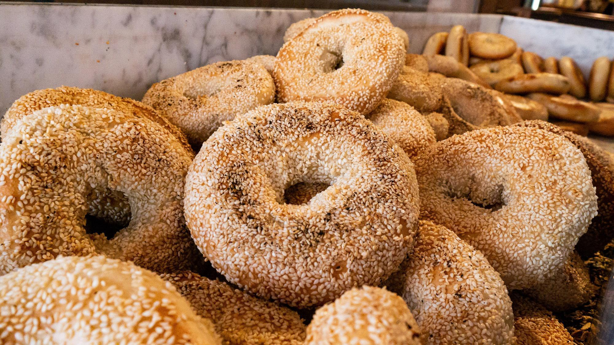

Gluten Free Tres Leches Cake

Bagels!
Picture sourced from www.thedailymeal.com, recipe from www.kingarthurbaking.com
Ingredients
- 9g instant yeast
- 480g bread flour
- 12g salt
- 14g non-diastatic malt powder (sub with brown sugar if you can't find it)
- 303g warmm water
- 2 quarts water
- 28g non-diastatic malt powder or brown sugar
- 14g sugar
Steps
- Combine yeast, flour, salt, 14g malt powder/brown sugar, and 303g water and knead for about 10-15 minutes
- Place mixed dough in a greased bowl and set aside to rise, at least 1 hour
- Cut dough into 6-8 balls depending on your preferred bagel size (I go with 6)
- Form balls into bagel shape by slightly flattening, then poking a hole in the middle and roll with two fingers, place on a baking sheet lined with parchment paper, and cover, let rise for another hour or so
- In the meantime, combine the 2 quarts water, 28g malt powder/brown sugar, and 14g sugar into a large pot, bring to a boil, also preheat oven to 425
- When water is boiling and bagels have risen, boil bagels in large pot, should be quick, about 1-2 minutes then flip, another 1-2 minutes and then take out. Bagels should be slightly inflated and sort of slimy
- Cover bagels in whatever toppings you like (I like everything bagels so I make my own mixture but go nuts here)
- Bake bagels in oven for about 22 minutes or so